Chapter 7: Determiners & quantifiers¶
Determiners — the small choice before a noun
Before we say a noun, we often put a small word in front that tells us which one, how many, or whose. In Hindi, "ye, wo, kuch, bahut, har, mera" do the job. In English the same "bahut" sometimes becomes many and sometimes much, and "kuch" sometimes becomes some and sometimes a few. This choice is made with one question — and that question is the key to this chapter.
In one line
A determiner comes before a noun and tells us which one, how many / how much, or whose. Articles (a, an, the) are determiners too — they have a separate chapter of their own.
- These mangoes are sweet. = Which ones? The ones here. (which)
- We don't have much time. = How much? Not a lot. (how much)
- Is this your bag? = Whose? Yours. (whose)
7.1 The first question, always — can you count it?¶
Almost every determiner mistake comes from one place: we didn't stop to think whether the noun can be counted or not. Ask this question first, and half of the determiners will start to feel right by themselves.

The very first question
Before choosing a determiner, ask: can the noun be counted or not? If countable, one or many — a, many, a few, these. If uncountable — much, a little, this. A few work with both: some, any, all, enough.
These words are not counted in English
work, advice, information, furniture, luggage, equipment, news, homework, traffic — they have no plural and don't take a / many.
To count them, add a piece: a piece of advice, two pieces of furniture, an item of news. In Hindi we can say "do salaah", which is why mistakes happen here the most.
7.2 this, that, these, those — near or far¶
These four words work like a finger — they point at something. There are only two questions: is the thing near or far, and is it one or many.
Near-far, one-many
this (near, one) · these (near, many) · that (far, one) · those (far, many). The determiner and the noun must agree in number: this book, these books.
'These type of' — the most common slip
- Wrong: These type of questions are easy.
- Right: This type of question is easy. / These types of questions are easy.
- Why: "these" is plural, so the noun after it must be plural too — types. Or keep both singular.
7.3 some and any — sentences with "yes" and sentences with "no"¶
Both mean roughly "a certain amount", and both work with countable plurals and uncountables. The difference is in the mood of the sentence: a plain statement, a denial, or a question.
| Sentence | Word | Example |
|---|---|---|
| Plain (positive) statement | some | I bought some apples. |
| Negative | any | I didn't buy any apples. |
| General question | any | Do you have any questions? |
| Offer or request | some | Would you like some tea? |
| "Whichever" (in a positive) | any | Take any seat you like. |
some vs any
some — in positive sentences, offers and requests. any — in negatives and general questions, or when it means "whichever". When offering tea we say "some" — because you hope the answer is "yes".
- There isn't any milk in the fridge. = There is no milk at all in the fridge.
- Can I have some water, please? It is a request, so we use "some" even though it is a question.
7.4 much, many, a lot of — how much and how many¶
The one Hindi "bahut" takes two roads in English. Here the countable question works directly — many for nouns you can count, much for a mass.
| Word | Goes with | Used mostly | Example |
|---|---|---|---|
| many | countable plural | everywhere | How many students came? |
| much | uncountable | negatives, questions | I don't have much money. |
| a lot of / lots of | both | positives, conversation | She has a lot of friends / patience. |
| fewer | countable | comparisons | fewer cars |
| less | uncountable | comparisons | less traffic |
much vs many
many + countable plural (many books), much + uncountable (much water). In positive statements "a lot of" sounds more natural — it works with both.
'How much' or 'How many'?
How much is this shirt? — the price (money is uncountable).
How many shirts did you buy? — the number.
7.5 a few / few, a little / little — the magic of "a"¶
Here one small "a" changes the whole mood. With "a" the statement is positive — there is a little, and it is enough. Without "a" the statement is negative — there is very little, and the lack is felt.
'a' is positive, without 'a' is negative
a few (countable) / a little (uncountable) = there is some, and it is enough. few / little = there is very little, and it is a problem. I have a little money → we can have tea. I have little money → that's difficult.
- She has a few good friends in Chennai. She has some good friends — she is not alone.
- Few people came to the meeting. Hardly anyone came — fewer than expected.
7.6 each, every, both, either, neither, all¶
These words talk about a group — the whole group, one of two, or everyone one by one. Their biggest feature: after them the noun is definitely singular or plural.
Group determiners
each, every, either, neither + singular noun + singular verb (Every student has a book). both = two, plural. all = three or more, or a whole mass (all the milk).
| Word | When | Example |
|---|---|---|
| each | two or more, focus on one by one | Each player gets a shirt. |
| every | three or more, the whole group | I walk every day. |
| both | the two of them | Both my parents work. |
| either | one of the two | You can sit on either side. |
| neither | not one of the two | Neither answer is correct. |
| all | three or more, or uncountable | All the shops were closed. |
If you add 'of', add 'the / my / these' too
each student ✓ each of the students ✓ each of students ✗
both my hands ✓ both of my hands ✓ neither of them** ✓
7.7 enough, and my / your / their¶
Two small determiners that you use every day. enough says "as much as is needed", and the possessive determiners say "whose".
enough — before a noun, after an adjective
enough* money · enough chairs — before a noun.
old enough · fast *enough — after an adjective or adverb. ✗ He is enough old. ✓ He is old enough to vote.
| Pronoun | Possessive determiner | Example |
|---|---|---|
| I | my | my phone |
| you | your | your idea |
| he / she | his / her | his car, her office |
| it | its | The dog wagged its tail. |
| we / they | our / their | our house, their children |
Two things that catch people out
1. Only one determiner with one noun: the my book ✗ → my book ✓.
2. its = belonging to it (possessive), it's = it is. The company changed its name. "his / her" depends on the gender of the owner, not of the thing: Priya's brother = her brother.
7.8 The mistakes we really make¶
The most common Indian-English mistakes with determiners
- Wrong: I have many works today.
- Right: I have a lot of work today.
-
Why: "work" (tasks to do) is uncountable — it has no plural and doesn't take "many". "works" means pieces of art or writing: the works of Premchand.
-
Wrong: Each students must bring an ID card.
- Right: Each student must bring an ID card.
-
Why: After each and every the noun is always singular. If you want a plural, say "each of the students" or "all students".
-
Wrong: Can you give me some informations?
- Right: Can you give me some information?
-
Why: information, advice, furniture, luggage — all uncountable. They never take -s.
-
Wrong: There are less buses on Sunday.
- Right: There are fewer buses on Sunday.
-
Why: You can count buses, so "fewer". "less" is for uncountables: less traffic, less noise.
-
Wrong: I don't have some money.
- Right: I don't have any money.
- Why: In a negative sentence use "any". "some" is for positive statements and offers.
7.9 Practice — Determiners¶
Exercise 1
How ___ sugar do you take in your tea?
- much
- many
- few
- a few
Hint: Can you count sugar?
Answer
much
Sugar is uncountable — we don't say 'two sugars' this way. With an uncountable we use 'much', and 'How much' asks for the quantity.
Exercise 2
Don't worry, we still have ___ time before the train leaves.
- a little
- little
- a few
- few
Hint: The meaning is positive — there is a little time, and it is enough.
Answer
a little
Time is uncountable, so it is the 'little' pair. And 'don't worry' shows the meaning is positive — so with 'a': a little.
Exercise 3
Look at ___ birds on that far tree!
- those
- these
- this
- that
Hint: They are far away, and there are many.
Answer
those
'that far tree' — the things are far away, and 'birds' is plural. Far + many = those.
Exercise 4
I asked two shopkeepers, but ___ of them had the charger.
- neither
- either
- both
- none
Hint: Not one of the two.
Answer
neither
There were two people and neither had a charger — 'not one of the two' = neither. 'none' is used more for three or more.
Exercise 5
Is there ___ milk left in the fridge?
Hint: It is a general question.
Answer
any
In general questions and negatives we use 'any'. 'some' would come when we are offering or requesting something.
Exercise 6
Every child ___ a gift at the party. (get — present simple)
Hint: After 'every', singular.
Answer
gets
'every child' is singular, so the verb is singular too — gets. In Hindi 'har bachche ko' may sound plural, but in English 'every' takes one at a time.
Exercise 7
Tap the wrong word in this sentence.
Sir, I have many works to finish today.
Answer
Wrong word: works.
Corrected: Sir, I have a lot of work to finish today.
'work' (tasks) is uncountable — it has no 'works', and 'many' doesn't go with it. Say 'a lot of work' or 'much work'.
Exercise 8
Find the wrong word.
Each students has a locker.
Answer
Wrong word: students.
Corrected: Each student has a locker.
After 'each' the noun is always singular — student. The verb 'has' is already singular, and that is correct.
Exercise 9
There is one mistake — find it.
She gave me some useful advices about the interview.
Answer
Wrong word: advices.
Corrected: She gave me some useful advice about the interview.
'advice' is uncountable and has no plural. To count one, say 'a piece of advice'.
Exercise 10
Match each determiner to the right noun.
| A | B |
|---|---|
| many | minutes |
| much | patience |
| a few | chairs |
| a little | furniture |
Answer
many — chairs; much — furniture; a few — minutes; a little — patience
You can count chairs and minutes — many, a few. You can't count furniture and patience — much, a little.
Exercise 11
Make the sentence in the right order.
Words: to / not / is / old / enough / He / drive
Answer
He is not old enough to drive
'enough' comes after the adjective — old enough. 'enough old' is wrong.
Exercise 12
Say this line — don't add -s at the end of 'information'.
Answer
Say: Could you give me some information about the course
You have to break the 'informations' habit by saying it aloud. It is a request, so 'some' — and 'information' with no -s.
What next?
Make a small list of your own: work, advice, information, luggage, furniture, news. Every time you say one of these words, stop and think — "can I count it?" In a week this question will become a habit.